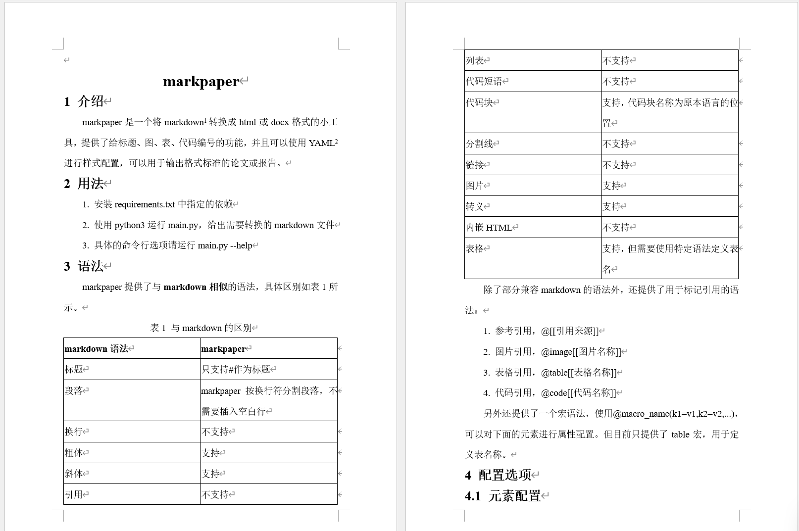

markpaper是一个将markdown1转换成html或docx格式的小工具，提供了给标题、图、表、代码编号的功能，并且可以使用YAML2进行样式配置，可以用于输出格式标准的论文或报告。
1. 安装requirements.txt中指定的依赖
2. 使用python3运行main.py，给出需要转换的markdown文件
3. 具体的命令行选项请运行main.py --help
markpaper提供了与markdown相似的语法，具体区别如表1所示。
| markdown语法 | markpaper |
|---|---|
| 标题 | 只支持#作为标题 |
| 段落 | markpaper按换行符分割段落，不需要插入空白行 |
| 换行 | 不支持 |
| 粗体 | 支持 |
| 斜体 | 支持 |
| 引用 | 不支持 |
| 列表 | 不支持 |
| 代码短语 | 不支持 |
| 代码块 | 支持，代码块名称为原本语言的位置 |
| 分割线 | 不支持 |
| 链接 | 不支持 |
| 图片 | 支持 |
| 转义 | 支持 |
| 内嵌HTML | 不支持 |
| 表格 | 支持，但需要使用特定语法定义表名 |
除了部分兼容markdown的语法外，还提供了用于标记引用的语法：
1. 参考引用，@[[引用来源]]
2. 图片引用，@image[[图片名称]]
3. 表格引用，@table[[表格名称]]
4. 代码引用，@code[[代码名称]]
另外还提供了一个宏语法，使用@macro_name(k1=v1,k2=v2,...)，可以对下面的元素进行属性配置。但目前只提供了table宏，用于定义表名称。
用户可在markdown的最前面插入yaml frontmatter3，定义多种元素的样式，具体内容如表2所示。
| 键名 | html | docx |
|---|---|---|
| base | body的样式 | 基准样式 |
| heading | h1-h6的样式，可被继承 | 标题的基准样式 |
| h1 | h1的样式，一般用作大标题 | 标题1的样式 |
| h2-h6 | h2-h6的样式 | 对于标题级别的样式 |
| paragraph | p标签的样式 | 段落的样式 |
| image | img标签的样式 | 无 |
| imageRef | 图片引用span的样式 | 图片引用的样式，只能配置字体 |
| imageLabel | 图片名称的样式 | 图片名称的样式 |
| table | table标签的样式 | 表格样式 |
| tableRef | 表格引用span的样式 | 表格引用的样式，只能配置字体 |
| tableLabel | 表格名称的样式 | 表格名称的样式 |
| tableCell | td标签的样式 | 除了表头之外的单元格的样式 |
| tableHeadCell | th标签的样式 | 表头单元格的样式 |
| code | pre标签的样式 | 无 |
| codeLabel | 代码名称的样式 | 代码名称的样式 |
| all | 匹配所有元素的样式 | 无 |
可配置的属性列表如表3所示，所有的样式属性html都支持，docx部分支持。
| 键名 | 类型 | 用途 | docx |
|---|---|---|---|
| color | str | 字体颜色 | ✓ |
| font_size* | int | 字体大小 | ✓ |
| en_font | str | 英文字体 | ✓ |
| cn_font | str | 中文字体 | ✓ |
| bold | bool | 粗体 | ✓ |
| italic | bool | 斜体 | ✓ |
| width* | int | 宽度 | ✘ |
| height* | int | 高度 | ✘ |
| first_line_indent | int | 首行缩进（字符） | ✓ |
| line_spacing* | int | 行间距 | ✓ |
| line_spacing_type | "1", "1.5", "2" | 行间距类型（单倍、1.5倍，双倍） | ✓ |
| alignment | "right", "left", "center", "justify" | 对齐 | ✓ |
| block_alignment | "right", "left", "center", "justify" | 块元素对齐 | ✓ |
| border_width* | int | 边框宽度 | ✘ |
| border_style | "solid" | 边框类型 | ✘ |
| border_color | str | 边框颜色 | ✘ |
| border_collapse | "collapse", "separate" | 边框折叠 | ✘ |
| word_wrap | bool | 允许英文单词内换行 | ✓ |
| display | "inline", "block", "none" | 显示 | ✘ |
| margin | str | 外边距 | ✘ |
| padding | str | 内边距 | ✘ |
*: 采用的单位为pt（磅）
另外对于标签类和标题类的元素，还提供了一个format属性，用于配置输出格式。可以选用的占位符有：
1. {gi} 该标签在整个文章中的编号
2. {s1} - {s6} 对于级别的标题编号
3. {name} 元素的name属性
4. {text} 元素的text属性
如果用户没有提供对应元素的样式，那么markpaper会采用默认样式，见代码1。
all:
margin: '0'
padding: '0'
base:
alignment: justify
bold: false
cn_font: "宋体"
en_font: Times New Roman
first_line_indent: 0
font_size: 14
italic: false
line_spacing_type: '1.5'
margin: 25pt 25pt
padding: '0'
code:
border_color: black
border_style: solid
border_width: 1
format: "代码{gi} {text}"
show_line_numbers: false
codeLabel:
alignment: center
imageRef:
format: "代码{gi}"
h1:
alignment: center
bold: true
font_size: 24
format: '{text}'
h2:
format: '{s1} {text}'
h3:
format: '{s1}.{s2} {text}'
h4:
format: '{s1}.{s2}.{s3} {text}'
h5:
format: '{s1}.{s2}.{s3}.{s4} {text}'
h6:
format: '{s1}.{s2}.{s3}.{s4}.{s5} {text}'
heading:
bold: true
font_size: 20
image:
block_alignment: center
display: block
format: "图{gi} {text}"
imageLabel:
alignment: center
imageRef:
format: "图{gi}"
paragraph:
first_line_indent: 2
table:
block_alignment: center
border_collapse: collapse
border_color: black
border_style: solid
border_width: 1
format: "表{gi} {text}"
tableCell:
border_color: black
border_style: solid
border_width: 1
tableHeadCell:
bold: true
border_color: black
border_style: solid
border_width: 1
tableLabel:
alignment: center
tableRef:
format: "表{gi}"html的转换效果请查看README.html，docx的转换效果如图1所示。
[1] https://en.wikipedia.org/wiki/Markdown
[2] https://yaml.org/
[3] https://docs.zettlr.com/en/core/yaml-frontmatter/